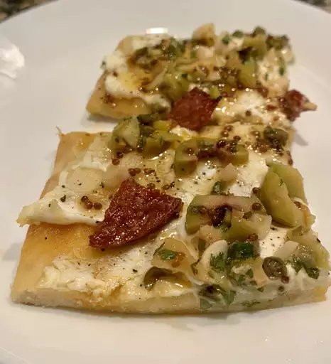

Lasagna Recipe
Homepage

Description
Lasagna is a classic recipe that every chief should have in there recipe's book.
It is one of the favorites of many chiefs and so it should be yours too.
Lasagna is a wide, flat sheet of pasta. Lasagna can refer to either the type of
noodle or to the typical lasagna dish which is a dish made with several
layers of lasagna sheets with sauce and other ingredients, such as meats and cheese,
in between the lasagna noodles.
Ingredients
- 1 (15 ounce) container ricotta cheese
- 1 (8 ounce) package shredded mozzarella cheese, divided
- 1 (3 ounce) package Parmesan cheese
- 1 egg
- 2 teaspoons Italian seasoning
- 1 pound sausage
- 1/2 (26 ounce) jar marinara sauce
- 6 flatbread
Steps to Make Lasagna
- Preheat oven to 375 degrees F
- Combine ricotta cheese, 1/2 of the mozzarella cheese,
Parmesan cheese, egg, and Italian seasoning in a bowl.
- Cook sausage in a skillet over medium heat until no longer pink
5-10 minutes; drain. Stir in marinara sauce.
- Spread 1/6 of the cheese mixture evenly on each flatbread;
cover with sausage mixture. Top with remaining mozzarella cheese.
- Bake in the preheated oven until cheese is melted and bubble, 10-15 minutes
Nutritional Facts (per serving)
- Nutrition: 602
- Fat: 37g
- Carbs: 31g
- Protein: 44g